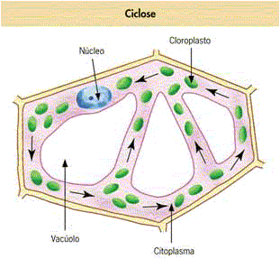

O ciclose é o movimento contínuo do citoplasma dentro das células, essencial para o transporte de organelas, nutrientes e outras substâncias essenciais para a célula. Este processo facilita a distribuição uniforme dos componentes dentro da célula e é especialmente importante em células vegetais e animais.
O ciclose ocorre devido à ação das fibras do citoesqueleto, que são responsáveis pela movimentação do citoplasma. Esse movimento é cíclico e ocorre de forma contínua, permitindo que o citoplasma se desloque de uma região para outra dentro da célula.
Este processo é crucial para a distribuição de nutrientes e para a movimentação das organelas, como os mitocôndrios, que precisam se mover para as áreas da célula onde mais energia é requerida. O ciclose também facilita a troca de gases e a eliminação de resíduos metabólicos da célula.
Em células vegetais, o ciclose é observado quando o citoplasma se move em torno da célula, geralmente visível em células que contêm grandes vacúolos. Esse movimento é essencial para a circulação de nutrientes e ajuda a manter a estrutura da célula vegetal.
